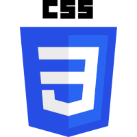
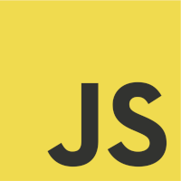
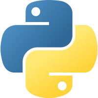
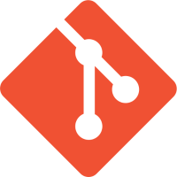
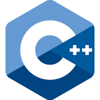

About Me
My name is Mark John Godfrey. I'm an aspiring web developer with a background in mathematics, and years of experience in programming.
From 2017 to 2020 I studied mathematics at The University of Newcastle upon Tyne. While I'd had some previous exposure to programming, it was during my time at university that I really discovered my passion and aptitude for it. There's something I find incredibly compelling about the process of formulating real-world problems as one a computer can solve.
I've always considered myself to be quite creative, and I often feel an urge to make. Having grown up, and spent much of my free time building Lego, I frequently find myself looking at the scenery around me and thinking up ways that you might recreate it with Lego. This inclination to recreate doesn't just apply to Lego. I find that I tend to enjoy any task that involves meeting exact aesthetic specifications, which is part of the reason I feel drawn to web development.
My creative whims have been the catalyst for many of the programming projects that I've worked on since graduating from university.
Skills
Since 2017 I've utilised a range of softwares and languages. Here's a list of the ones I'm familiar with:
- HTML5
- CSS3
- JavaScript
- jQuery
- Python
- GitHub
- Git
- Chrome Developer Tools
- Markdown
- Command Line
- Visual Studio Code
 R
R
Here's a list of those I'm less familiar with, but have used in the past:
- C++
- Fortran
- Latex
- Matlab